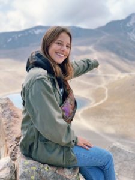

Bonjour, moi c'est Chloé. Laissez moi me présenter !
Originaire de Lille, j'ai d'abord entrepris une licence de droit européen à l'Université Catholique avant d'intégrer Audencia Business School en 2017. Je suis aujourd'hui étudiante en M2 dans la majeure Marketing digital. Je suis une personne expressive et de nature curieuse, j'ai souvent de l'énergie à revendre que ce soit dans les domaines qui me passionnent ou ceux que je cherche à découvrir. J'aime beaucoup partager de bons moments avec mon entourage pour qui je serai une oreille attentive.
Passionnée de voyages et amoureuse des animaux du monde, j'ai un très fort intérêt pour la défense des causes animale et environnementale au travers de divers domaines. Du haut de mes 1m68, je fais de mon mieux au quotidien pour sauver la planète que ce soit par de petits gestes, en adoptant de nouvelles habitudes ou encore plus concrètement en signant très régulièrement des pétitions pour différentes causes . Qui a dit que l’on ne pouvait pas faire avancer les choses de chez soi ? C'est la raison pour laquelle dans le cadre de la création de blog en master, j'ai choisi de rédiger des articles liés à l'environnement. Mon but lors de sa rédaction était tout simplement d'essayer d'apporter des idées et astuces pour améliorer le quotidien de chacun voire convaincre d’adopter pour de bon telle ou telle habitude.
Quels sont mes autres centres d'intérêt ?
Mode
Arts
Musique
Sports
Mon plus grand souhait ? Qu’ensemble nous puissions faire avancer les choses pour sauver notre chère hôte, dame Planète 🌎